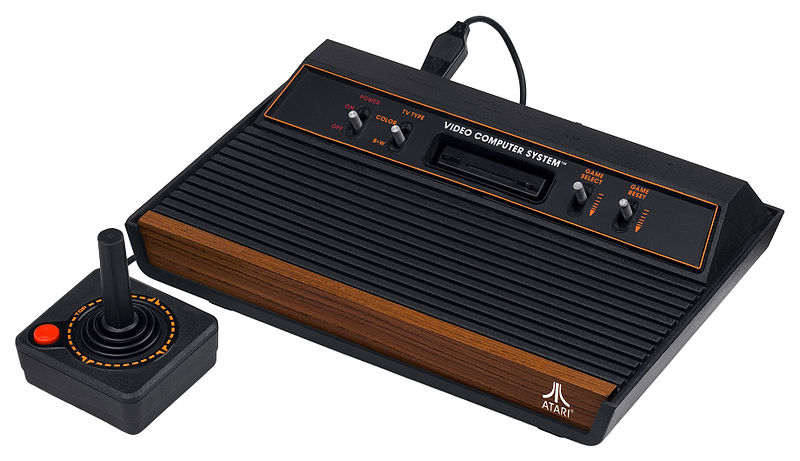
Atari 2600
The Atari 2600 was inducted into the National Toy Hall of Fame at The Strong in Rochester, New York in 2007. In 2009, the Atari 2600 was named the second greatest video game console of all time by IGN, who cited its remarkable role as the console behind both the first video game boom and the video game crash of 1983, and called it "the console that our entire industry is built upon
100$
387287349
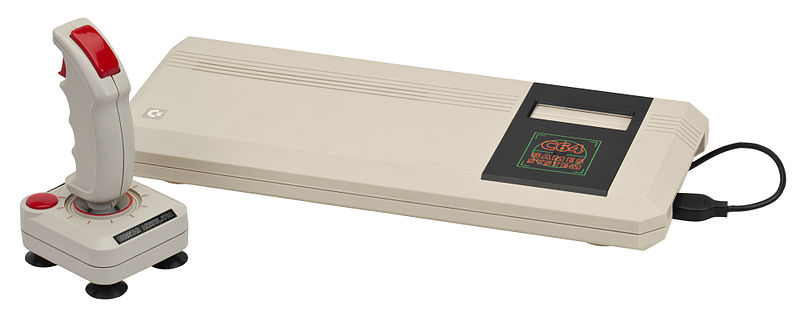
Commodore 64
it remains the highest selling computer of all time, and will most likely never be surpassed. This claim is disputed, because various changes were made to the "Commodore 64", making the CP/M plug in cartridge incompatible with all but some 1982 production models, as well as the computer being revamped and placed into a new case, then its name changed to Commodore 64C, indicating that there were at least 3 different models in this range of computers
595 US$
231987329
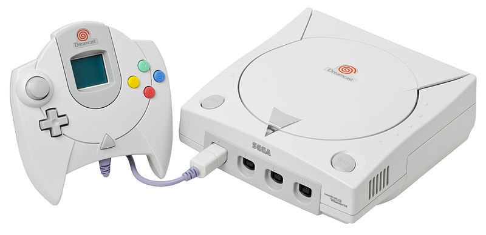
Dreamcast
Dreamcast was released by Sega in November 1998 in Japan and later in 1999 in other territories. It was the first entry in the sixth generation of video game consoles, preceding its rivals, the PlayStation 2, Xbox and GameCube. The Dreamcast was Sega's last home console to date.
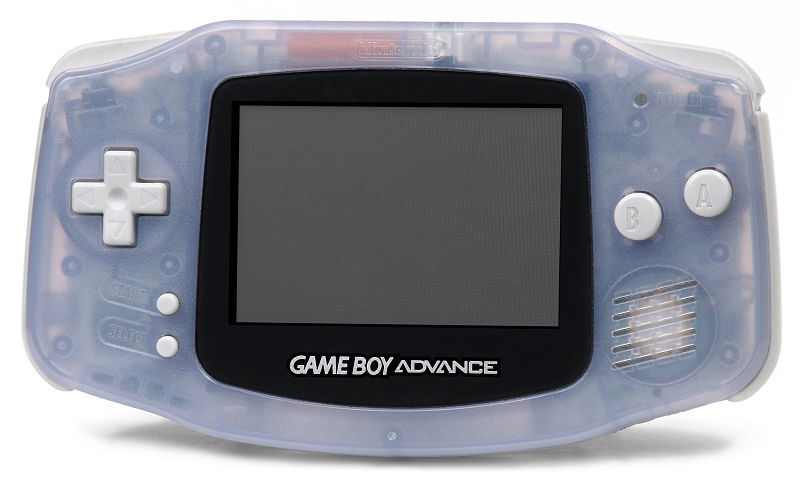
Game Boy Advance
GBA is a 32-bit handheld video game console developed, manufactured and marketed by Nintendo. It is the successor to the Game Boy Color.
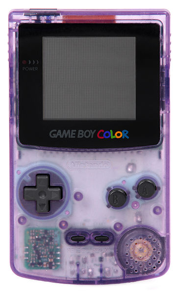
Game Boy Color
GBC is a handheld game console developed by Nintendo and released on October 21, 1998 in Japan, November 18, 1998 in North America, November 23, 1998 in Europe and November 27, 1998 in Australia. It is the successor of the Game Boy Pocket.
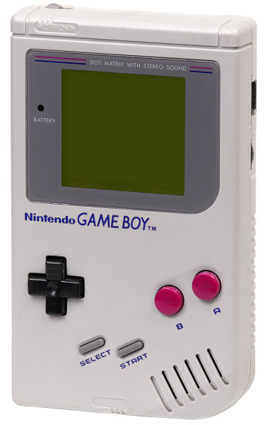
Game Boy Original
Game Boy Original a 8-bit handheld video game device developed and manufactured by Nintendo. It was released in Japan on April 21, 1989, in North America in August 1989, and in Europe on September 28, 1990. It is the first handheld console in the Game Boy line.
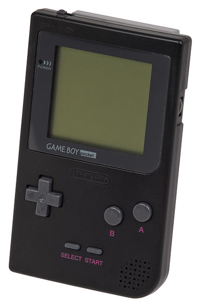
Game Boy Pocket
In 1996, Nintendo released the Game Boy Pocket: a smaller, lighter unit that requires fewer batteries. It has space for two AAA batteries, which provides approximately 10 hours of game play. The Pocket has a smaller link port, which requires an adapter to link with the older Game Boy.
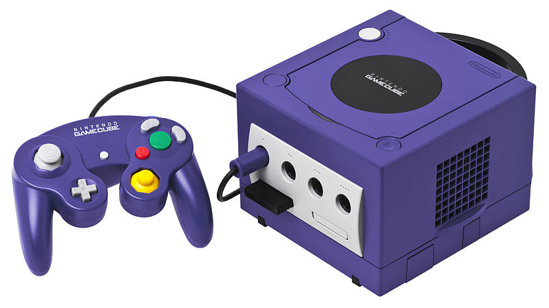
GameCube
GameCube is a video game console released by Nintendo on September 14, 2001, in Japan and November 18, 2001, in North America. It was later released worldwide in 2002. This sixth-generation console was the successor to the Nintendo 64 and competed with Sony's PlayStation 2, Microsoft's Xbox, and Sega's Dreamcast.
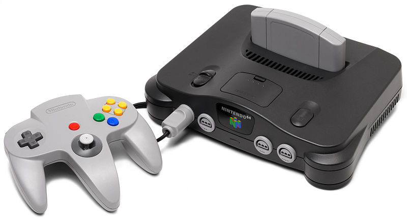
Nintendo 64
Often referred to as N64 (formerly known as the Nintendo Ultra 64, and codenamed Project Reality) is Nintendo's third home video game console for the international market. Named for its 64-bit central processing unit.

NES-101
The NES-101 model of the Nintendo Entertainment System (informally known as the NES 2, the top-loading model, or simply the Top Loader) is a compact, top-loading redesign of the original Nintendo Entertainment System control deck and game controllers released by Nintendo in 1993.
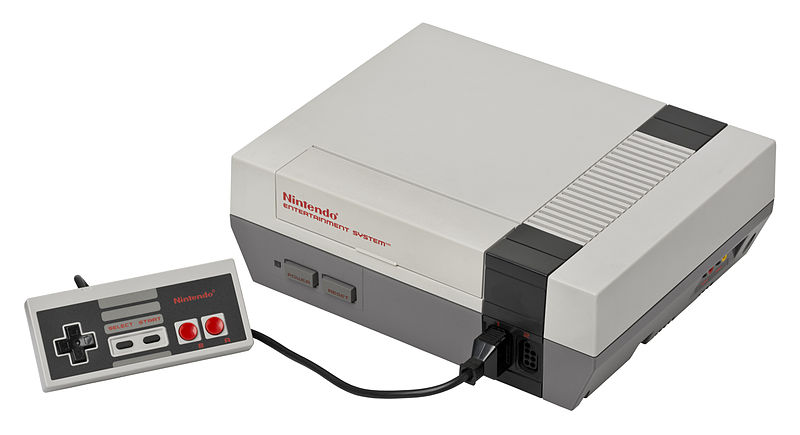
NES
Nintendo Entertainment System is an 8-bit video game console that was developed and manufactured by Nintendo. It was initially released in Japan as the Family Computer (ファミリーコンピュータ Famirī Konpyūta?) (also known as the Famicom (ファミコン Famikon?) and abbreviated as FC) on July 15, 1983, and was later released in North America during 1985, in Europe during 1986, and Australia in 1987. In South Korea, it was known as the Hyundai Comboy (현대 컴보이) and was distributed by SK Hynix which then was known as Hyundai Electronics. It was succeeded by the Super Famicom/Super Nintendo Entertainment System.
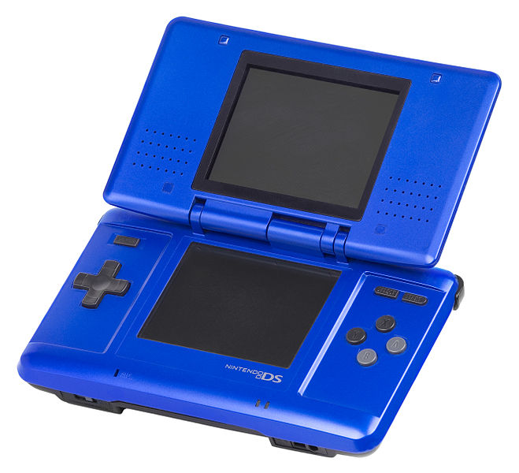
Nintendo DS
The Nintendo DS is a dual-screen handheld game console developed and released by Nintendo. The device went on sale in North America on November 21, 2004. The DS, short for "Developers' System" or "Dual Screen",[4] introduced distinctive new features to handheld gaming: an LCD screen working in tandem with a touchscreen, a built-in microphone, and support for wireless connectivity.
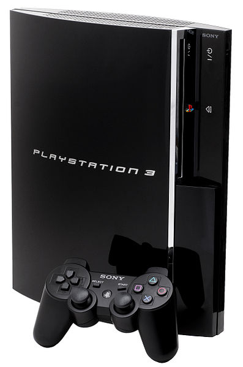
Playstation 3
Playstation 3 is a home video game console produced by Sony Computer Entertainment. It is the successor to PlayStation 2, as part of the PlayStation series. PlayStation 3 competes with Microsoft's Xbox 360 and Nintendo's Wii as part of the seventh generation of video game consoles.
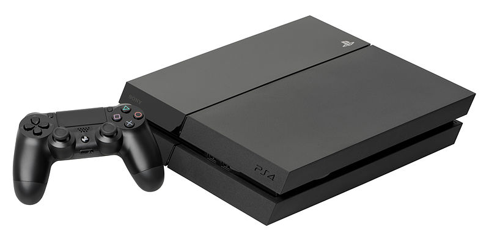
Playstation 4
Playstation 4 is a video game console from Sony Computer Entertainment. Announced as the successor to PlayStation 3 during a press conference on February 20, 2013, it was launched on November 15, 2013, in North America, and November 29, 2013, in Europe and Australia.[15][16] It competes with Nintendo's Wii U and Microsoft's Xbox One, as one of the eighth generation of video game consoles.
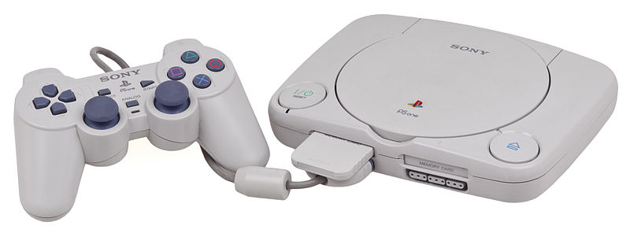
Playstation one
A re-designed "slim" version called the PSone was released, replacing the original grey console and named appropriately to avoid confusion with its successor, the PlayStation 2.
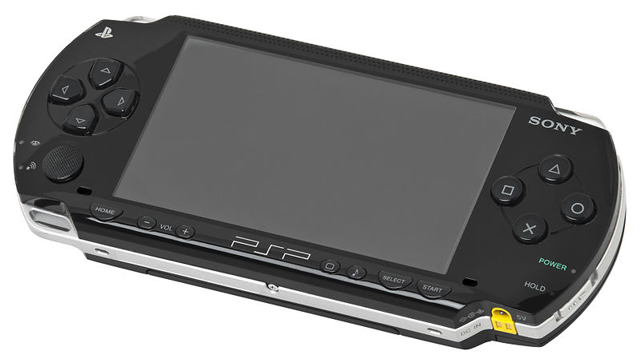
Playstation Portable
The PlayStation Portable is the only handheld video game console to use an optical disc format, Universal Media Disc (UMD), as its primary storage medium.[9][10] Other distinguishing features of the console include its large viewing screen,[11] robust multi-media capabilities,[12] and connectivity with the PlayStation 2, PlayStation 3, other PSPs and the Internet.
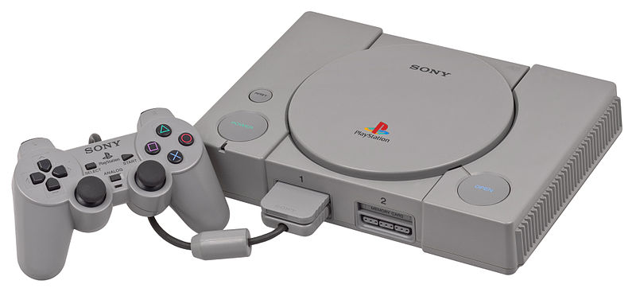
Playstation
Is a 32-bit video game console first released by Sony Computer Entertainment in Japan on December 3, 1994,[1] with Western releases in September 1995. The PlayStation was the first of the PlayStation series of consoles and handheld game devices. As part of the fifth-generation of gaming, it primarily competed with the Nintendo 64 and the Sega Saturn.
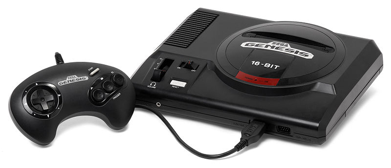
Sega Genesis Model 1
The Sega Genesis, known as Mega Drive in most regions outside North America, is a 16-bit video game console developed and sold by Sega Enterprises, Ltd. The Genesis is Sega's third console and the successor to the Master System.
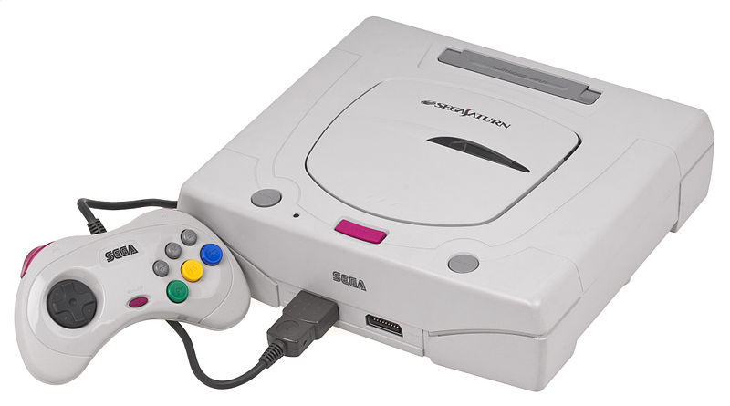
Sega Saturn Model 2
The Saturn sold 9.5 million units worldwide, and its installed base in Japan was over 6 million units though it was only 2 million in the United States. While it was popular in Japan, the Saturn failed to gain a similar market share in North America and Europe against its main competitors: Sony's PlayStation and later the Nintendo 64.
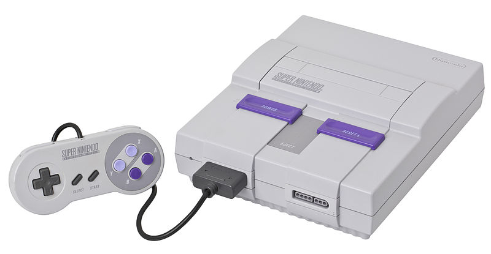
Super Nintendo
The Super Nintendo Entertainment System (also known as the Super NES, SNES or Super Nintendo) is a 16-bit video game console developed by Nintendo that was released in 1990 in Japan, 1991 in North America, 1992 in Europe and Australasia (Oceania), and South America in 1993. In Japan,
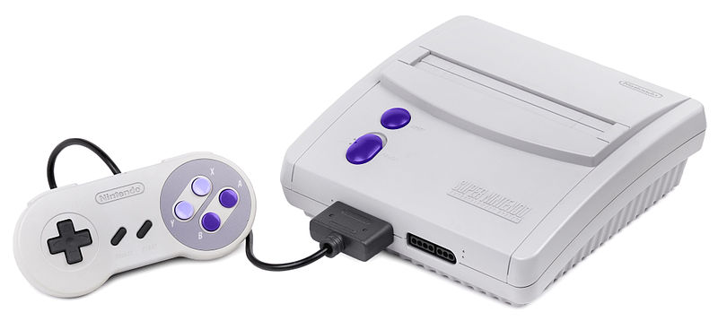
Super Nintendo, (Super Famicom)
The system is called the Super Famicom, officially adopting the abbreviated name of its predecessor, the Family Computer), or SFC for short. In South Korea, it is known as the Super Comboy (슈퍼 컴보이) and was distributed by Hyundai Electronics.
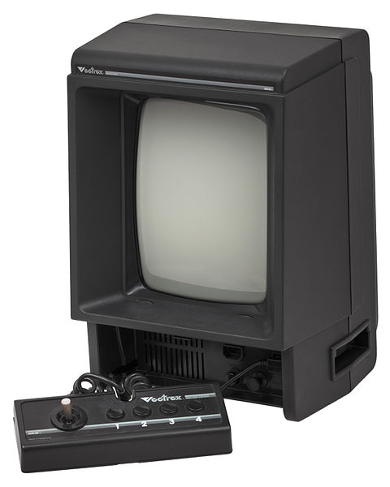
Vectrex
The Vectrex is a vector display-based video game console that was developed by Western Technologies/Smith Engineering. It was licensed and distributed first by General Consumer Electronics (GCE), and then by Milton Bradley Company after their purchase of GCE. It was released in November 1982.
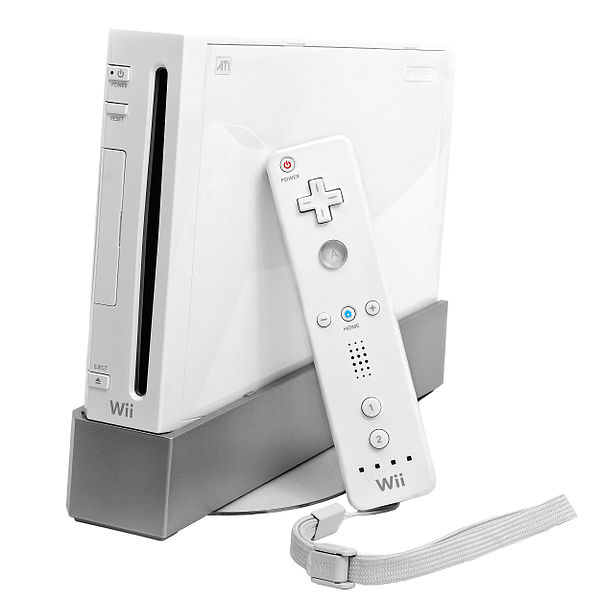
Wii
The Wii is a home video game console released by Nintendo on November 19, 2006. As a seventh-generation console, the Wii competes with Microsoft's Xbox 360 and Sony's PlayStation 3.
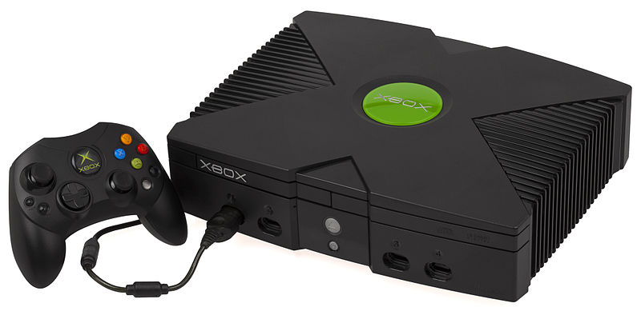
Xbox
The Xbox is a video game console manufactured by Microsoft. It was released on November 15, 2001, in North America, followed by Australia and Europe in 2002.[2] It was Microsoft's first foray into the gaming console market. The sixth-generation console competed with Sony's PlayStation 2, Sega's Dreamcast, and the Nintendo GameCube. It was the first console produced by an American company since the Atari Jaguar ceased production in 1996.
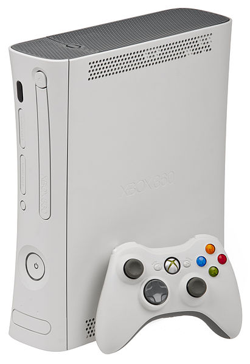
Xbox 360
The Xbox 360 is a video game console developed by and produced for Microsoft that was released in 2005. The successor to the original Xbox, it is the second console in the Xbox series. The Xbox 360 competes with Sony's PlayStation 3 and Nintendo's Wii as part of the seventh generation of video game consoles.